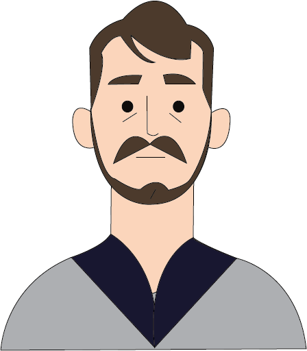

Auguste Renoir


Nascita:
25 Febbraio 1841, Limoges, Francia
Morte:
3 Dicembre 1919, Cagnes-sur-Mer, Francia
Corrente:
Impressionismo



Opere più famose: Ballo al Moulin de la Galette 1876; La colazione dei canottieri 1881
Curiosità: Continua a dipingere fino alla morte, nonostante la paralisi degli arti inferiori e una semiparalisi di quelli superiori dovuti alla forte artrite reumatoide. Pare che sia morto con i pennelli in mano, stretti tra le dita rattrappite.
Citazione: “Ogni tanto, bisogna tentare cose superiori alle proprie forze.”